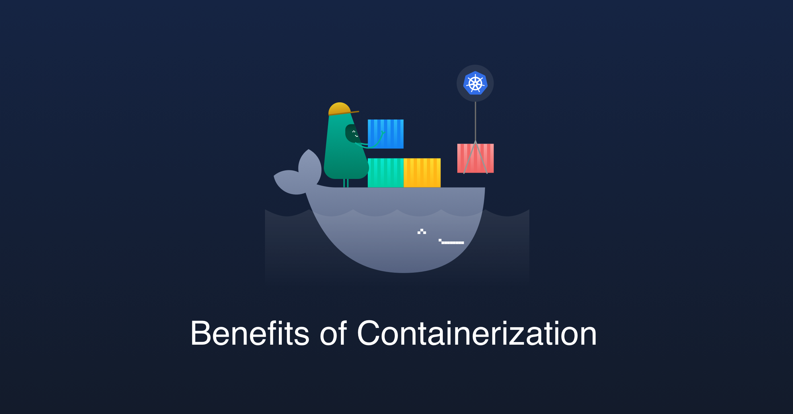

What is Containerization
Containerization has become a major trend in software development as an alternative or companion to virtualization. It involves encapsulating or packaging up software code and all its dependencies so that it can run uniformly and consistently on any infrastructure. The technology is quickly maturing, resulting in measurable benefits for developers and operations teams as well as overall software infrastructure.